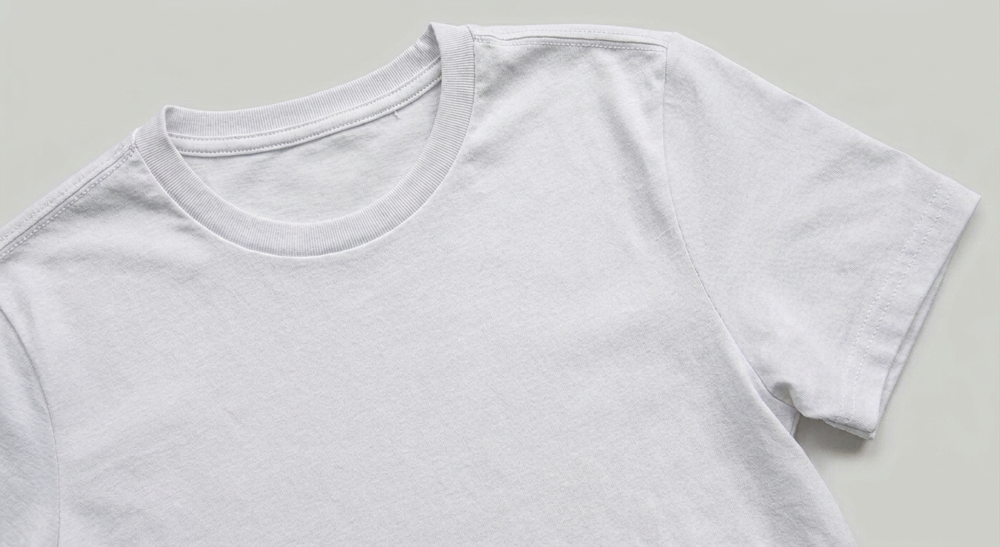
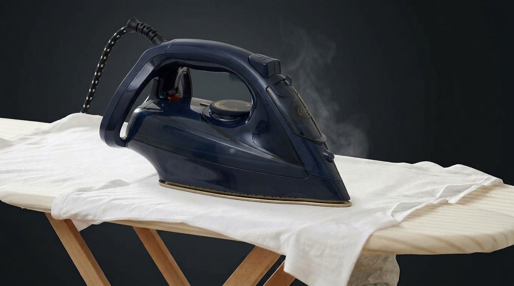

丁寧な手仕上げ
お客様の大切な衣類を、一点一点、手作業で仕上げます。

お客様の大切な衣類を、一点一点、手作業で仕上げます。
ワイシャツも手仕上げ。着ると気が引き締まる、ピシッと伸びた状態でお渡しします。
素材やシミの種類に合わせた薬品を使い、技術を駆使して落としていきます。
お電話一本で集配に伺います。お忙しい方も、気軽にご利用いただけます。

素材別に、適切なクリーニング方法をプロの視点からアドバイスします。
皮革やカシミアなどの特殊な素材にも対応。他店で断られたお品物も、お気軽にお持ちください。
白樺クリーニングは、1973年に創業しました。長年クリーニング業に携わってきた先代の確かな技術とノウハウに、新しい技術やお客様のニーズを重ねながら、サービスの品質向上に努めています。
先代は、アイロン掛けの全国大会でも複数回の受賞経験があります。
代表 本間 大介
★★★★★ 先日、忘れかけてたお気に入りの白いシャツがクローゼットの奥から出てきて、着ようと思ったら、襟の黄ばみ汚れが…。ほぼあきらめムードで、しらかばさんに持って行ったら、なんと、真っ白にしてくれました。気に入ったものを長く着られて嬉しいです。ありがとうございます！
★★★★★ 染み抜きが、とても上手で助かってます。
★★★★★ 同業者ですが、人柄がとても素敵です。
Googleマップに寄せられたクチコミより
白樺クリーニング様に、あったらうれしいと感じたサービスをご提案します。駐車場がなく、お子様連れや荷物の多い方、お急ぎの方にも受け取りやすい仕組みです。
※このセクションは企業様へのご提案です。現在ご提供中のサービスではありません。